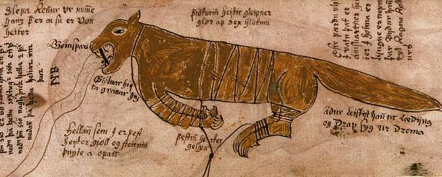

Gleipnir the Magical Chain

Fenrir, son of Loki and Angrboða, was a very strong wolf. Chains
made by Thor could not hold him. The sons of Ivaldi devised this
chain recipe, which finally could hold the great Fenrir.
Ingredients
- The sound of a cat's footstep
- The roots of the mountain
- The spit of the birds
- The beard of the woman
- The sinews of the bear
- The breath of the fish
Directions
- Intertwine each ingredient to form a rope
- Tie up your foe